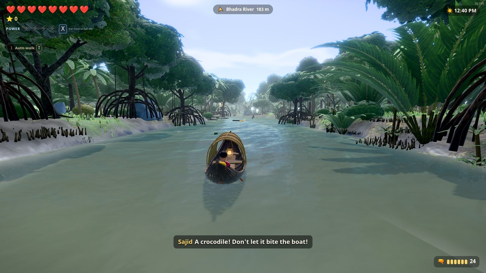

Lost in the world's largest mangrove forestপৃথিবীর সবচেয়ে বড় ম্যানগ্রোভ বনে পথ হারাল সাজিদ
Sajid was on a ship trip through the Sundarbans (সুন্দরবন) with his Baba, Riad. A storm came, a deer ran, Sajid ran after it, and the ship sailed on without him.
Walk, swim and paddle through 20 levels of real places: Harbaria, the Pasur and Bhadra rivers, Kachikhali's Tiger Point, Katka, Dublar Char, Nilkamal, all the way to Hiron Point, where Baba is waiting.
বাবা রিয়াদের সাথে জাহাজে চড়ে সুন্দরবন বেড়াতে গিয়েছিল সাজিদ। হঠাৎ ঝড় উঠল, একটা হরিণ ছুটে বনের ভেতর ঢুকে গেল, সাজিদও ছুটল তার পেছনে। ফিরে এসে দেখে, জাহাজ তাকে ফেলেই চলে গেছে!
হেঁটে, সাঁতরে আর নৌকা বেয়ে পার হও সুন্দরবনের ২০টি আসল জায়গা: হাড়বাড়িয়া, পশুর ও ভদ্রা নদী, কচিখালীর টাইগার পয়েন্ট, কটকা, দুবলার চর, নীলকমল, আর শেষে হিরণ পয়েন্ট, যেখানে বাবা অপেক্ষা করছেন।
